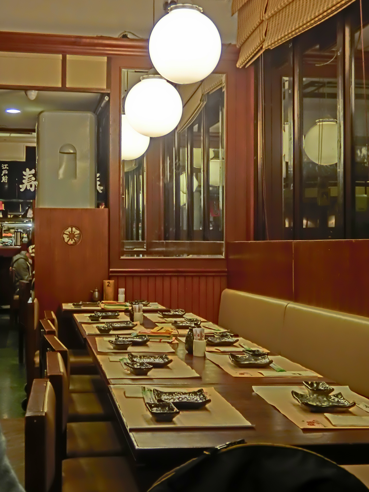

Information on how Chef Haruto's Ramen started
Hi, I am Yuki Haruto. All my life I have had a great passion for the Japanese cuisine. My favorite type of dish to make is ramen! All different kinds. I learned from my grandfather, a retired cook from Okinawa, Japan. I love that I can share my gift with the world, so I made my own restaurant for everyone to enjoy. Some of my other hobbies include fishing at lakes and writing. I have a great many poems.
I believe my Japanese Cuisine is more masterful than other for a few good reasons. First, my restaurant is authentic. Everything I know was passed down from my grandfather, and his ancestors before him. Whe you eat here, you eat real Japanese food. Other than that, it is really peaceful and homey, and anyone wanting a nice quiet dinner should enjoy it. If you decide you want a taste of authenticity, come to my restaurant! I hope you enjoy it.